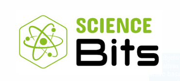

Science Bits es un repositorio multimedia de lecciones de ciencias que promueve el paso de un modelo educativo basado en la mera transmisión de hechos científicos a un modelo constructivista, basado en la indagación, el descubrimiento, la reflexión y el razonamiento crítico. Esta plataforma está diseñada para obtener el máximo rendimiento en formato digital: tanto del potencial multimedia de la computadora de cada alumno como de la pizarra digital. El Concytec que fomenta la conformación de clubes de ciencias, ha impulsado la implementación en los colegios con clubes, una nueva plataforma que acerca al gusto por la ciencia. En ese sentido nuestra IE con su club ”Bonifacinos explorando Conciencia” estarà fortalecido por Science Bits, cuyos objetivos didácticos se centran en el desarrollo de las competencias educativas y la comprensión de los conceptos clave, mediante un aprendizaje activo basado en la investigación y el descubrimiento. El modelo de enseñanza 5E es un modelo constructivista basado en 5 fases: Engage, Explore, Explain, Elaborate y Evaluate. El modelo se basa en empezar movilizando los conocimientos previos de los alumnos; proceder conectando sus ideas con nuevos conocimientos adquiridos a través de la investigación y el descubrimiento; proveer de explicaciones formales de aquellos conceptos que serían difíciles de descubrir intuitivamente; y proveer de oportunidades para demostrar los aprendizajes comprensivos mediante su aplicación práctica.
Hola, ¿En qué puedo ayudarte?